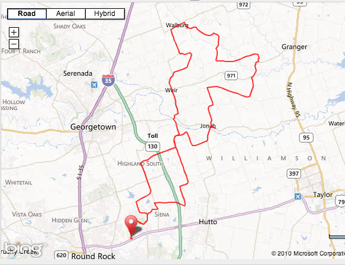
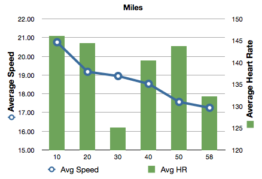

F-40 Round Rock Outlaw 100
12 Oct 2013

Talk about blowing your preride plan.
The first 20 miles turned into a hammer fest (at least for me) and the ride can be summed up thus:
My legs are going to fall off.
Lots of recumbents at the ride. About 700 riders total. Brian Buckmaster was there on his ICE Vortex. I saw a Cruzbike Vendetta, this guy must live around here because this is the second time I’ve seen him at a local ride. A guy on a Lightning Phantom. I saw a TerriTrike tandem (Red), but did not get to meet the riders. And then some type of LWB bike - maybe a Bella.
Lots of questions about the yellow banana bike - I really need to think of a catchy name.
The most popular pre-ride question today: ’Is that on there because it is going to rain?’
My preride strategy was just doing an easy 100 miles with a low heart rate and an average around 17-18 mph.
I’m talking to a guy waiting for the ride to start. He says that for HHH he averaged 23 mph for the first 80 miles then his buddy started cramping and they had to slow down. They still ended up finishing under 5 hours.
I think to myself, hmmmm I wonder how long I can keep him in sight?
So at the start I floored it so that I could keep close to him. Well, I quickly took the lead and held it for a very long time. My heart rate seemed to be pegged at 150, which is way to high for me to sustain for 100 miles. But I could not force myself to slow down (after all they were right behind me somewhere :) I was first to the first rest stop, flew by it and just kept going.
About 20 miles into the ride I knew I had over exerted myself and I would not be able to do the full 100 miles. So I slowed my heart rate down to 125. It did not make a difference because right at that time a tailwind kick up and was blowing from the south 14 mph gusting to 20 mph. Hence, my speed did not decrease at all for the next ten miles (mile 30 below) even though I was peddling a lot easier.

This was not good news - because soon I would be turning south for the last half of the ride directly into what was turning into a fierce headwind.
I convinced myself that 100 miles was not going to happen and changed to trying the 100k (63 miles). That did not last long. Now it was time to just try and finish the ride without bonking. Of course in my haste of the first hour and a half I had not been taking my nutrition. Hydration yes, nutrition no. Stupid, I know.
Well I just started looking for the shortest way back and peddled easy to try and finish without cramping. I rejoined the 50 mile route eventually and rode with them for quite a ways.
Final numbers: 57.9 miles at 17.2 mph. (But the first hour was really fast!)
Some good videos of today’s ride:
Start of the ride where I quickly take the lead. Myself and the HHH 23 mph guy leave everyone else behind. One of the three leadout pacing motorcycles goes with us and the other two motorcycles drop back waiting for everyone else. Nobody catches us for a good 15 miles. The HHH guy was really good, but he must have over done it himself becuase when the lead pack finally caught us he dropped back also.
Here is a high speed run where two time trial guys try to go pretty aero to out coast me - good luck with that
Here I’m heading into the 14 mph headwind (slightly from right) gusting to 20 mph. Notice that even though I’m only doing 16-18 mph I’m passing everyone like they are standing still. F-40 says ’What headwind?’
And last, this is the finish of the ride. Skip to the end to see the finishing line arch.
Last, but not least, all the numbers.
http://app.strava.com/activities/88628795